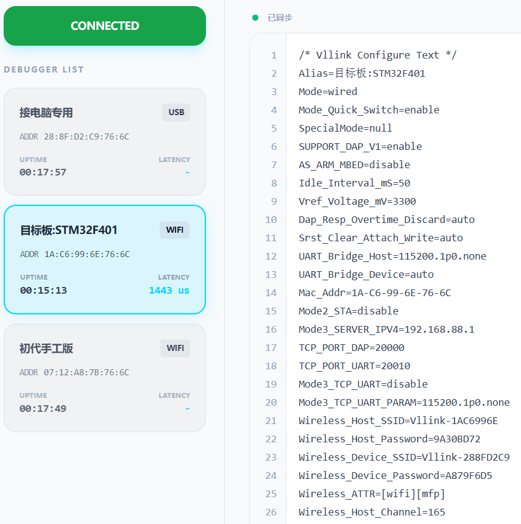

Vllink Basic2 2026年新特性
前言：这次新特性开发非常顺利，但由于代码变动较大，交互机制也有改动，目前是以独立教程的形式发布，待稳定后再合并至主站。
全新配置工具：Vllink 2026 Console
一、综述
二、灯光机制
红灯：指示是否启用USB功能
常灭：关闭USB
常亮：启用USB
蓝灯：指示是否启用无线AP功能及无线状态
常灭：关闭无线AP
闪烁：启用无线AP，且未接入STA
常亮：启用无线AP，且已接入STA
绿灯：指示是否启用无线STA功能及无线状态
常灭：关闭无线STA
闪烁：启用无线STA，且未连接AP
常亮：启用无线STA，且已连接AP
黄灯：
常灭：DC3接口未被选定
闪烁：DC3接口已被选定，且VRef电压低
常亮：DC3接口已被选定，且VRef电压正常
蓝绿灯：
注意：仅在AP模式且
Mode2_STA被启用时出现同步闪烁：未连接路由器
同步常亮：已连接路由器
三、按键机制
双击：循环切换模式，有线模式 -> 无线AP模式（接电脑） -> 无线STA模式（接芯片）-> 有线模式 -> ...
长按10秒：重置所有配置，但
VOut以及Vref_Voltage_mV除外，避免误改动输出电压
四、一对多
配置工具：Vllink 2026 Console
4.1 准备工作
准备多个调试器，其中一个用于连接电脑，作为AP，其余至多八个连接开发板，作为STA
全部升级至 V00.41-202603222246 或更高版本固件
对于STA，需要通过长按重置或通过配置工具清除
Wireless_Device_SSID与Wireless_Device_Password
4.2 直连一对多
将AP连接电脑，通过双击切换到AP模式，蓝灯闪烁
将所需的STA上电，并接好开发板，通过双击切换到STA模式，绿灯闪烁
在AP与STA处于通讯距离内时，会自动完成自动配对或重连
只有被选定的AP或STA上所连的开发板能被电脑上的调试软件访问
选定方法请看 4.3 小节
4.3 配置工具
使用浏览器打开 Vllink 2026 Console
点击
CONNECT DEVICE，选择DAPLink CMSIS-DAP并连接连接后，左侧是调试器卡片列表，当前选定的调试器卡片会高亮，单击卡片选定其他调试器
调试器卡片中会显示调试器别名、已连接时长、实时延迟
调试器卡片中有个
Reset按钮，可以重启该调试器右侧是功能区，目前可修改选定调试器的配置
一些配置说明：
配置文本修改时会高亮，同步成功后是绿色高亮
CREL + ENTER或者光标离开编辑区会触发同步Alias：调试器别名，重启后生效，会显示在卡片中Wireless_Host_SSID：作为AP时，对外广播的SSIDWireless_Host_Password：作为AP时，配置的连接密码，默认密码会根据MAC生成，用于实现自动配对，但不适合用于高安全场景Wireless_Device_SSID：作为STA时，重连此SSIDWireless_Device_Password：作为STA时，重连密码
示例：

4.4 局域网/广域网一对多
4.5 安全性说明
本调试器在 有线模式 下不会进行 任何无线通信
本调试器在 无线模式 下不会尝试 与非配置IP建立任何连接
本调试器在直连模式下会基于唯一MAC生成
SSID与PASSWORD，此机制并非不可破解，若对安全性有要求，强烈建议统一修改PASSWORD后使用，修改方法如下：AP端，修改
SSID，此项可不改：Wireless_Host_SSID=您的SSIDAP端，修改
PASSWORD：Wireless_Host_Password=您的私有密码STA端，修改
SSID：Wireless_Device_SSID=您的SSIDSTA端，修改
PASSWORD：Wireless_Device_Password=您的私有密码
典型场景：
研发办公室：一般视为信任区域，不需要修改，默认即可
外场：建议修改
SSID与PASSWORD，消除无线特征，并对调试器进行物理防护，防止通过USB连接修改配置，进而获得您开发板的访问权
五、WebUSB接口
TODO
六、TCP-UART
简述：配置Wireless_Device_SSID=路由器SSID、Wireless_Device_SSID=路由器密码以及Mode3_TCP_UART=enable，切换到模式3，在STA连上路由器后，查看STA的IP。即可通过TCP客户端连接：STA_IPv4:20010。串口参数可通过Mode3_TCP_UART_PARAM修改。
七、TCP-DAP
简述：配置
Wireless_Device_SSID=路由器SSID、Wireless_Device_SSID=路由器密码，切换到模式3，在STA连上路由器后，查看STA的IP。即可通过最新版OpenOCD连接。命令：
./openocd.exe -f interface/cmsis-dap.cfg -f target/stm32f4x.cfg -c "cmsis-dap backend tcp; cmsis-dap tcp host 192.168.1.183; cmsis-dap tcp port 4441; transport select swd; adapter speed 8000"注意：执行命令前修改IP。测试：
> adapter speed 30000 adapter speed: 30000 kHz > dump_image ram.bin 0x20000000 0x10000 dumped 65536 bytes in 0.168065s (380.805 KiB/s) > load_image ram.bin 0x20000000 65536 bytes written at address 0x20000000 downloaded 65536 bytes in 0.134932s (474.313 KiB/s)
八、后续
计划增加 旁路总线访问 特性。简单来讲就是网页直接读取或者写入任意地址，且不影响正在进行的调试功能。这个特性是高性能旁路RTT的基础。